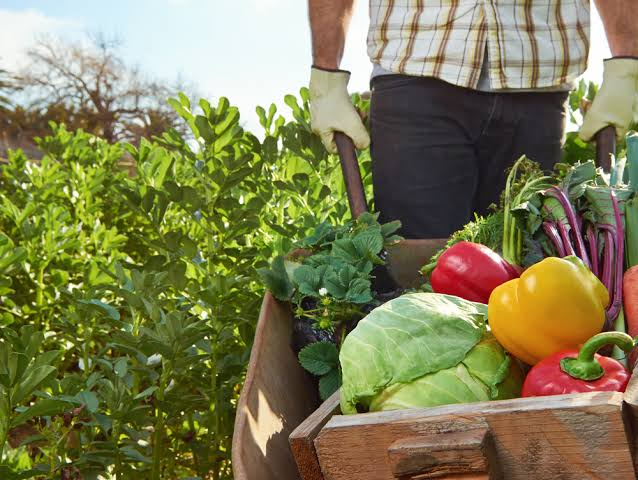
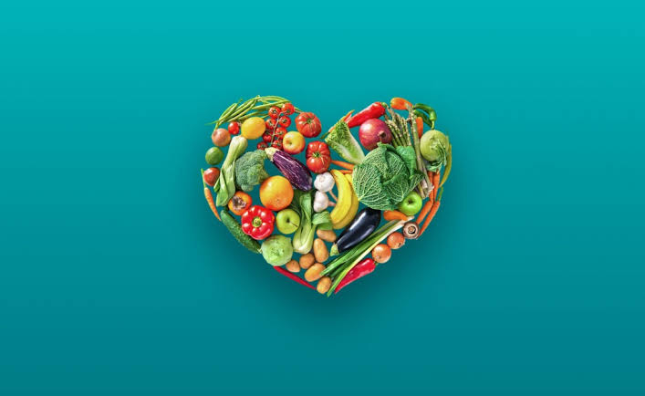
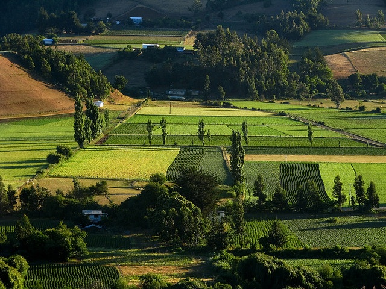

Nutrición
5 Razones para Comer Más Verduras de Temporada
Descubre por qué los productos de temporada son más nutritivos, económicos y sostenibles que los que vienen de otros países.
Consejos, recetas y noticias del campo chileno
Aprende, cocina y conecta con el origen de tus alimentos

Descubre por qué los productos de temporada son más nutritivos, económicos y sostenibles que los que vienen de otros países.

Pequeños cambios en tus hábitos alimentarios pueden tener un gran impacto en el medioambiente. Te contamos cómo empezar hoy.

Visitamos la Región del Maule para conocer a las familias que cultivan las manzanas y verduras que llegan a tu mesa cada semana.